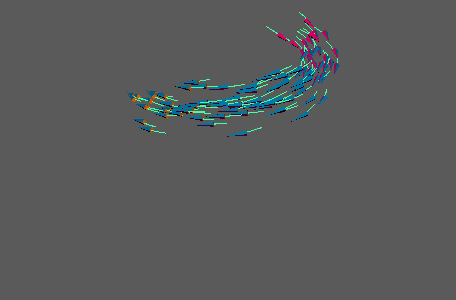
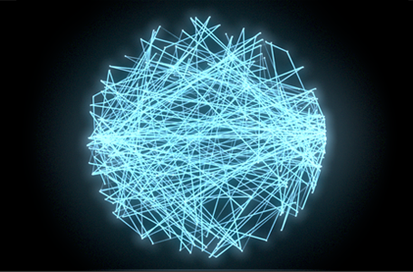
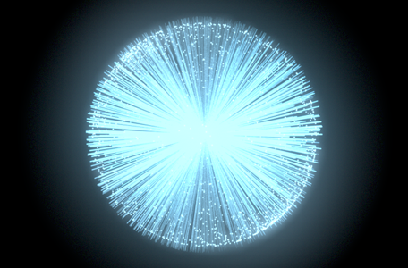
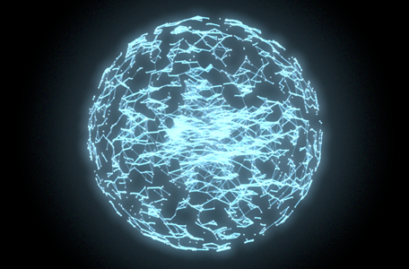
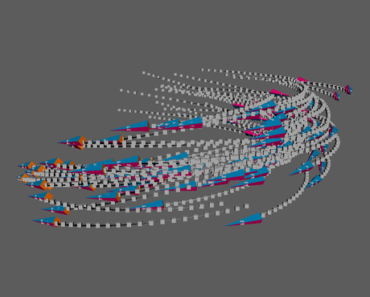

在点后面或点之间创建四边形轨迹。
注： 轨迹从非常薄的四边形开始。如果您无法看到它们，请尝试增加“轨迹缩放”(Trail Scale)或添加卡通轮廓。在后一种情况下，您可以进一步调整卡通属性，创建更有趣的效果。此外，轨迹将忽略不可见的点。
注： 轨迹与
“颜色”(Color)节点兼容。将二者应用于 MASH 网络时，可以启用轨迹网格的顶点着色来查看效果。
轨迹节点
-
轨迹模式
- 确定要创建的轨迹的类型。选项包括：
- 轨迹：轨迹随时间遵循点路径（请参见上面的示例）。
- 接合点：轨迹按顺序将点连接在一起。您可通过调整“计数”(Count)属性向上分割链。

- 连接到点：轨迹从每个点连接到一个由“连接点”(Connection Point)属性指示的公共点。

- 连接到最近点：轨迹连接到由“计数”(Count)属性指示的最近邻近点的点数。
- 按距离连接：轨迹在指定的“搜索半径”(Search Radius)内的点之间连接。

- 约束对：轨迹显示在 MASH 约束上。
-
最大轨迹数
- 确定允许具有轨迹的最大点数。
-
轨迹长度
- 通过细分数目确定轨迹的长度。
-
轨迹缩放
- 确定每个轨迹在其局部 Z 轴方向上的宽度。
-
衰退轨迹
- 随时间衰退轨迹。如果需要轨迹在其点停止移动之后消失，请启用此选项。
-
计数
- 根据当前的“轨迹模式”(Trails Mode)指定不同的内容。在“接合点”(Join the Dots)模式下，这将确定在接合点后将存在的链数。在“连接到最近点”(Connect to Nearest)模式中，这将确定要连接的最近邻近点的点数。
-
搜索半径(Search Radius)
- 指定“轨迹模式”(Trails Mode)设置为“按距离连接”(Connect by Distance)时轨迹连接两个点的距离。
-
连接点
- 指定“轨迹模式”(Trails Mode)设置为“连接到点”(Connect to Point)时所有轨迹将连接到的空间中的点。
-
连接网络
- 指定“轨迹模式”(Trails Mode)设置为“连接到点”(Connect to Point)时要将轨迹连接到的点的另一个网络。点按点 ID 进行连接。
-
剖面曲线
- 允许使用输入曲线定义轨迹的轮廓形状。您可以使用鼠标中键将曲线节点拖动到此处，或者单击鼠标右键并选择“连接”(Connect)，以指定当前选定的曲线。
-
曲线采样数
- 确定轨迹形状如何精确符合“剖面曲线”(Profile Curve)。值越大，形状更精确且细分越多，但性能较慢。
封口设置
这些设置确定“剖面曲线”(Profile Curve)是闭合曲线时 MASH 如何处理轨迹的封口。
-
前封口模式、后封口模式
- 确定轨迹的前面（最接近该点的一侧）或后面如何封口。选项包括：
- 无：封口处于打开状态。
- 封口：封口的边已在其中心处由面连接。
- 倒角封口：封口的边已在其中心处由面连接，稍后将倒角。
-
倒角封口分段数(Cap Divisions)
- 确定在“倒角封口”(Bevel Cap)模式中倒角时要使用多少个分段。较大的值将使相关封口更平滑，但会降低性能。
-
封口距离
- 确定在“倒角封口”(Bevel Cap)模式中倒角时倒角沿每个轨迹的局部 X 轴的长度。
-
二次间距
- 确定轨迹是否沿封口的局部 X 轴使用二次间距。启用此详细圆形封口。启用此选项后，将获得更圆的封口。
曲线
包含“轨迹锥化曲线”(Trail Taper Curve)和“倒角封口曲线”(Bevel Cap Curve)图表，用于分别控制“轨迹模式”(Trails Mode)设置为“轨迹”(Trails)时轨迹的正面和背部形状。
-
继承比例
- 使轨迹几何体按轨迹点的比例对齐。
-
自动上方向向量
- 自动确定轨迹四边形的朝向。
-
上方向向量(Up Vector)
- 手动自定义轨迹四边形的朝向。
-
输出轨迹点
- 将“轨迹模式”(Trails Mode)设置为“轨迹”(Trails)时，在每个轨迹点创建一个 MASH 点。

-
将点输出为节点
- 确定启用“输出轨迹点”(Output Trail Points)时要使用的 MASH 网络。如果连接了多个 MASH 网络，则按点 ID 指定轨迹。
-
时间
- 显示当前帧。